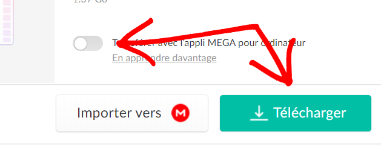
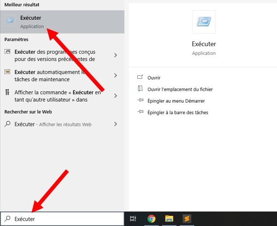

HOW TO INSTALL MODS FOR PLAY ON MY MC SERVER
STEP 1
1. Télécharge ce fichier qui contient tous les mods en fichier compressé : ici
HOW TO DOWNLOAD A MEGA FILE

2. Décompresse le fichier : Clique DROIT sur le fichier > Clique sur "Extraire ici"
STEP 2
1. Dans ta barre de recherche windows, écrit : "Exécuter" et ouvre l'application
2. Dans la barre de recherche, tape "%appdata%" et clique sur "Ok"
3. Un fichier s'ouvre. Va dans .minecraft et met s'y le fichier que tu as téléchargé avant. Enfin, renome le fichier en "mods"
Et voilà ! Les mods sont installé :D
STEP 3
Pour finir, il faut installer FORGE
1. Double clique sur le fichier "forge-1.15.2-31.1.0-installer" dans ce fameux fichier "mods", une fenêtre s'ouvre :
2. Vérifie que "Install client" est bien coché, et clique sur "Ok"
3. Une fenêtre avec plein de lignes qui défiles et une barre de chargement apparait, c'est normal laisse faire.
4. Enfin, supprime ce fichier "forge-1.15.2-31.1.0-installer"
Et voilà ! Forge est installé :D
STEP 4
Vérifie bien que lorsque tu démarre Minecraft, ton jeu est bien sur la session "1.15.2-forge-31.1.0" est celle avec la quelle tu joue !
Avec cette session seulement tu pourras avoir les mods sur le serveur ET en solo (donc tu peux aller y faire des tests en créatif)

Vérifie également, une fois ton jeu lancé, que il y a bien 10 mods chargé !